Need fast, accurate dependence estimation?
InfoAtlas is a pretrained model that, after one-time
training on a vast atlas of synthetic distributions, estimates the dependency between
any (x, y) pair in a single forward pass.
Samples in, dependence out — and it stays differentiable.
Neural mutual information (MI) estimators are accurate but slow: each new dataset triggers its own optimization run. InfoAtlas removes that step. Pretrained once on a large synthetic atlas of dependence structures, it infers MI in a single forward pass — matching state-of-the-art accuracy at ~300× the speed, on inputs of varying dimension and sample size, with strong zero-shot transfer to real data.
A dual-path attentive hypernetwork, pretrained on a synthetic atlas of dependence structures.
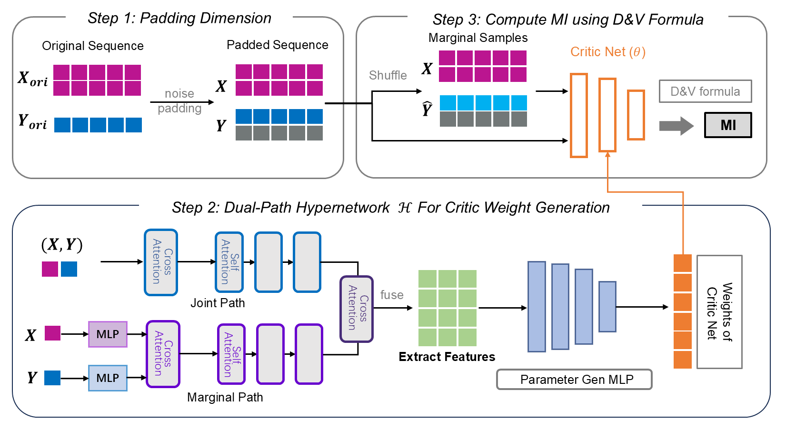
Given samples from an unknown joint distribution,
InfoAtlas emits the parameters of a
near-optimal Donsker–Varadhan critic in a single forward pass.
A joint path attends over paired samples (x, y);
a marginal path shuffles the pairing to model independence.
Cross-attention fuses the two, and a small MLP decodes the critic
weights.
Smaller inputs are padded with independent Gaussian noise — a transformation that provably preserves MI — and attention handles varying sample sizes natively. For dimensions beyond the trained range, we plug InfoAtlas into k-sliced MI [1], itself a solid dependence measure.
[1] Goldfeld, Greenewald, Nuradha, Reeves. k-Sliced Mutual Information: A Quantitative Study of Scalability with Dimension. NeurIPS 2022.
The shift: prior neural estimators optimize a critic per dataset. InfoAtlas infers it — minutes become milliseconds.
One checkpoint, no fine-tuning — from synthetic benchmarks to robotics. Click the arrows or use ← / →.
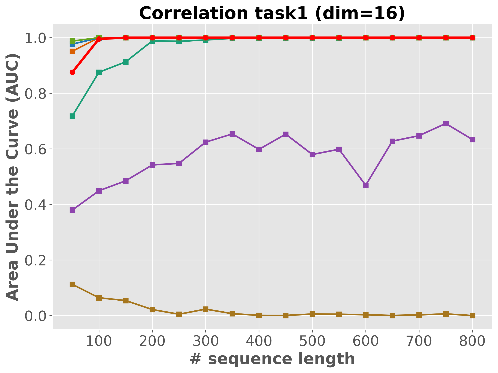
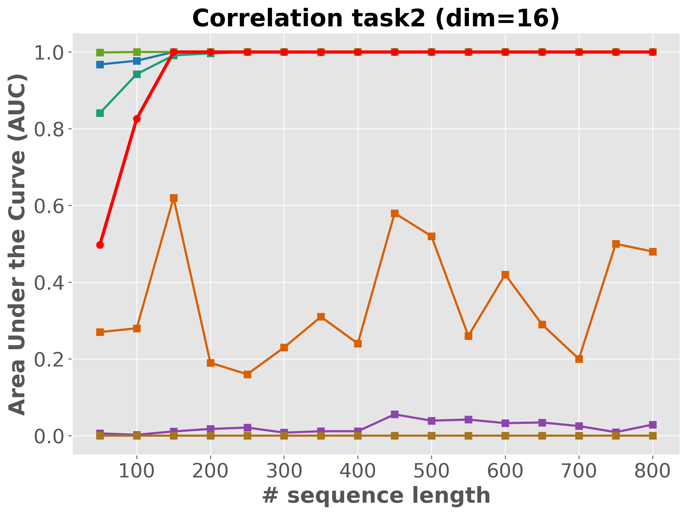
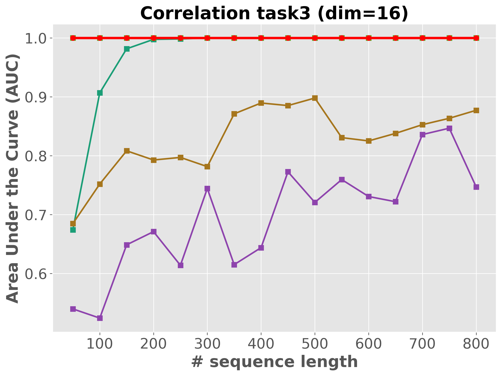
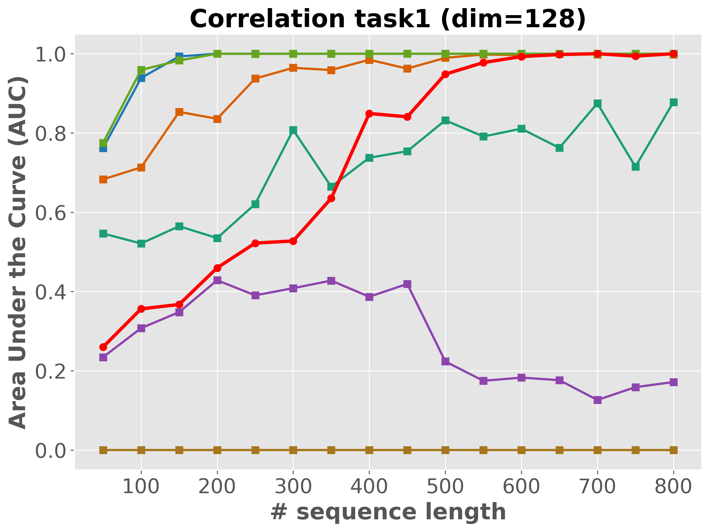
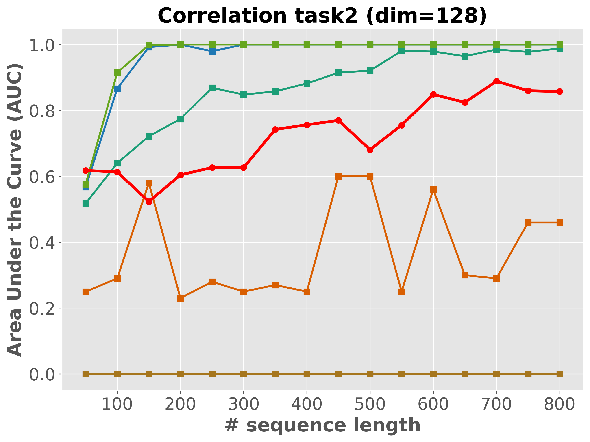
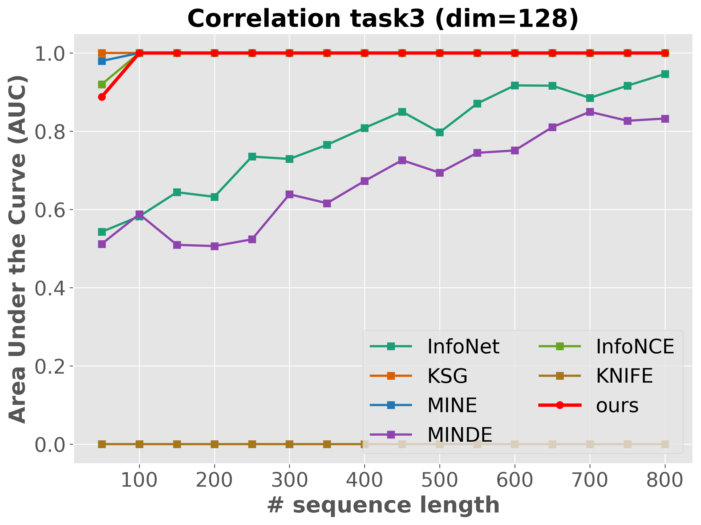
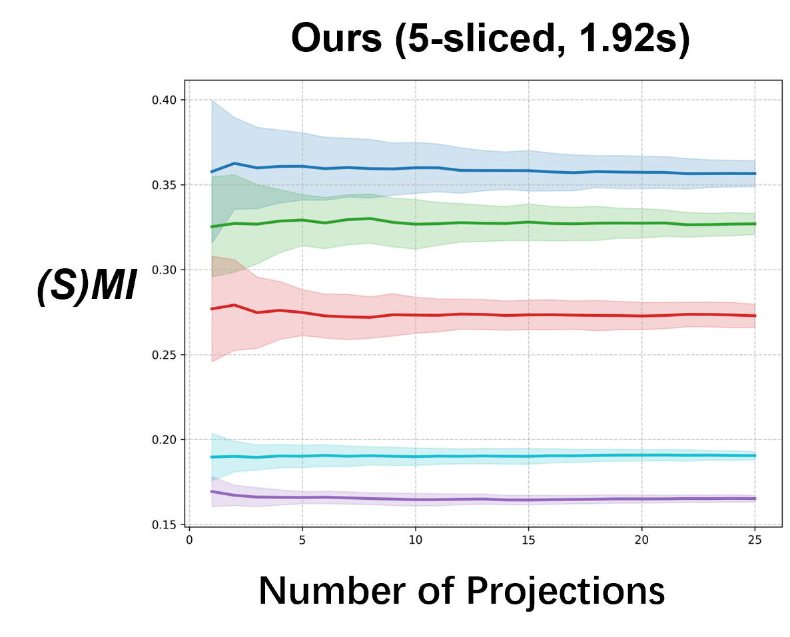
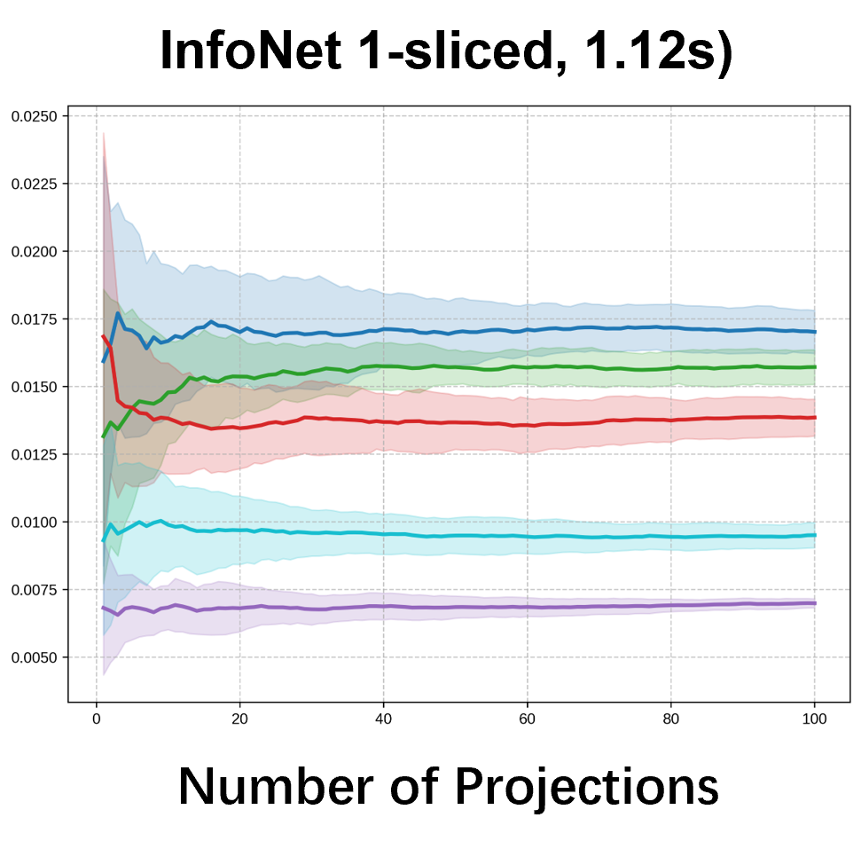
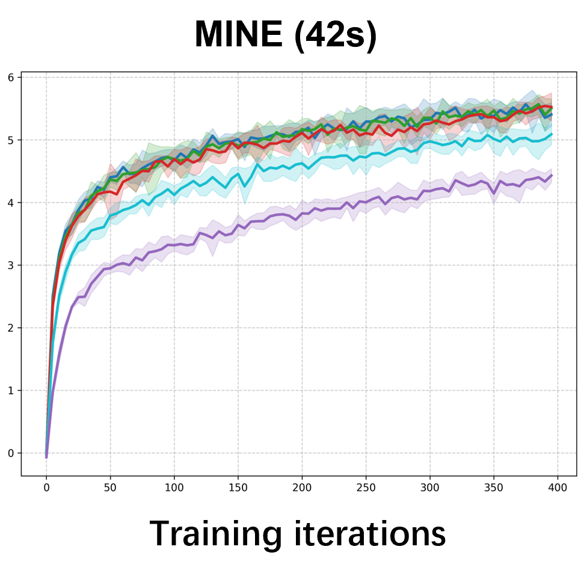
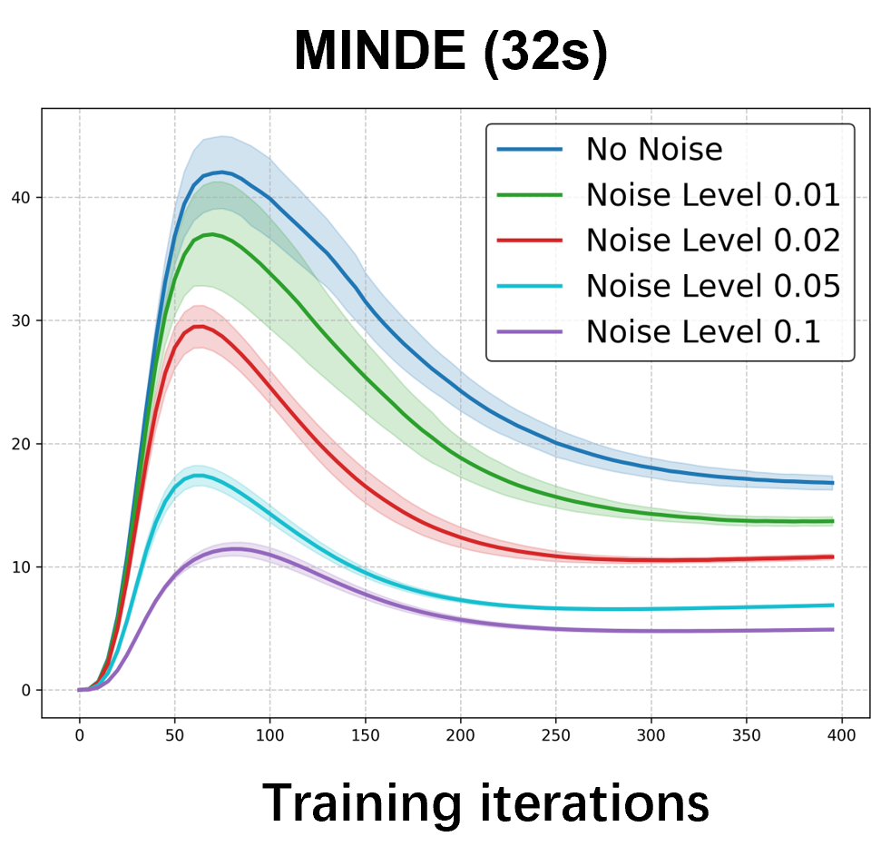
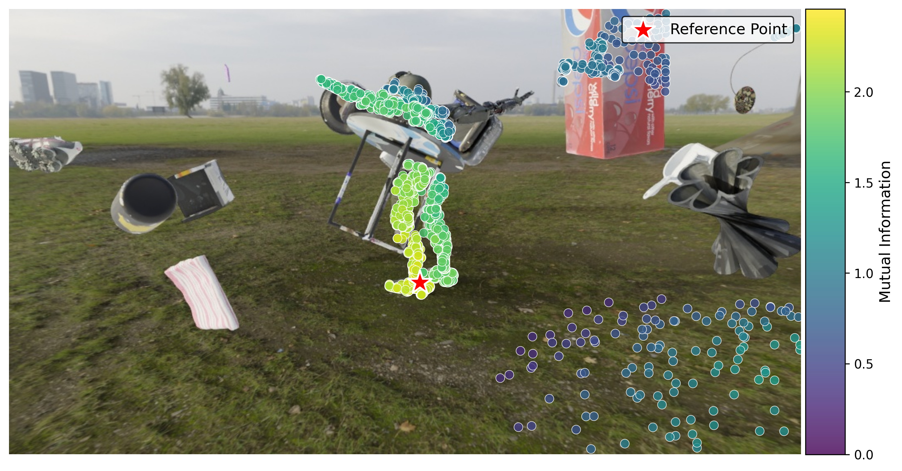
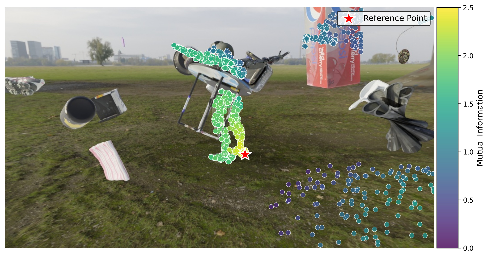
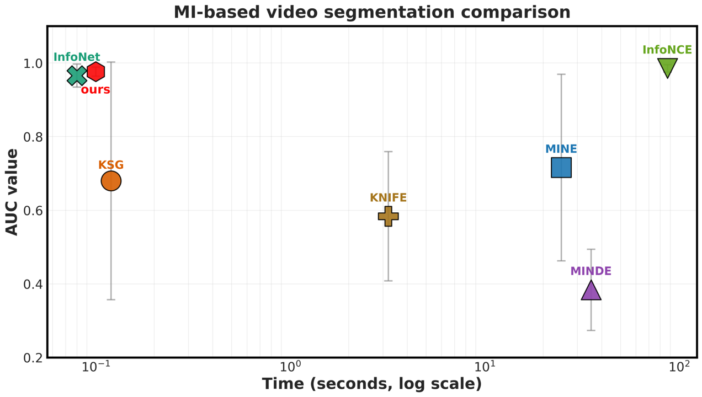
Please cite the ICML 2026 version once the proceedings are out; for now, the arXiv preprint suffices.
@article{hu2026infoatlas,
title = {{InfoAtlas}: A Foundation-style Model for Zero-Shot
Statistical Dependency Measurement},
author = {Hu, Zhengyang and Chen, Yanzhi and Ren, Hanxiang and Zeng, Qunsong
and Zheng, Youyi and Weller, Adrian and Huang, Kaibin and Yang, Yanchao},
journal = {arXiv preprint arXiv:2606.00241},
year = {2026},
eprint = {2606.00241},
archivePrefix = {arXiv},
note = {To appear at ICML 2026. Equal contribution: Zhengyang Hu and Yanzhi Chen.}
}